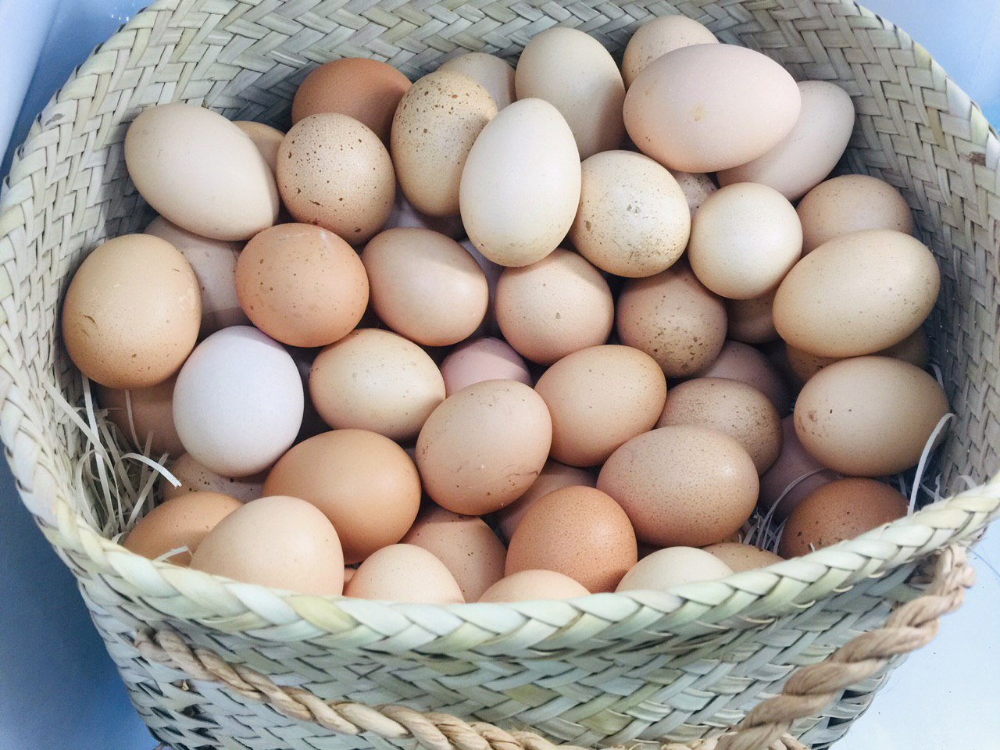
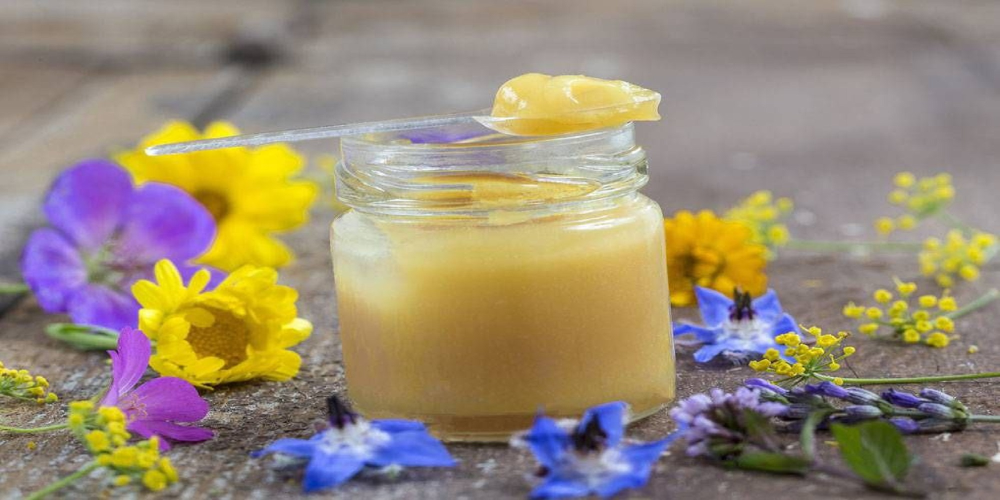

قیمت:بزودی
قیمت:بزودی
قیمت:بزودی
قیمت:بزودی

ارده تولیدی در استان یزد دارای رنگ سفید می باشد. دلیل سفید بودن ارده سنتی یزد تفت ندادن کنجد ها بعد از فرآیند پوست گیری است. اغلب کنجد هایی که برای تهیه ارده سفید یزد استفاده می شوند از نوع کنجد خارجی است که بخش غالب آن از کشور های پاکستان و یا افغاستان به کشور وارد می شوند.
ابتدا کنجد پوست گیری می شود و سپس با حجم بسیار زیادی در کوره ها بو داده و بعد از آن عمل ارده گیری انجام خواهد شد، این روش را ارده گیری پرس گرم نیز می گویند. در تولید ارده سنتی محلات از دو نوع کنجد ایرانی و کنجد خارجی استفاده می شود. کنجد ایرانی دارای کیفیت بیشتری نسبت به نوع خارجی است و به همین جهت ارده سنتی حاصل از آن دارای دارای قیمت بیشتری نیز می باشد.
مصرف شیره انگور موجب ترمیم بافتهای آسیبدیده پوست و جلوگیری از پیری پوست میشود. از خواص شیره انگور میتوانیم به مواردی مانند تقویت حافظه و پیشگیری از آلزایمر، کمک به افزایش وزن و چاقی، آرام بخش اعصاب، مفید برای کودکان، مفید در دوران بارداری، پیشگیری از سرطان، سلامت پوست و رفع کمخونی اشاره کرد.
عسل گون باعث تقویت مغز و اعصاب می شود و انرژی زا بوده که به تقویت حافظه نیز کمک می کند، برای کم خونی مفید است، خواب آور می باشد،
شربت زعفران برای هضم بهتر غذا، تقویت معده و از بین بردن نفخ معده بسیار موثر است. این شربت موجب بهبود مبتلایان به آسم، فشار و چربی خون و قند می شود. به دلیل خاصیت خون سازی که دارد موجب تقویت قلب و وضعیت عمومی بدن می شود.
شربت گل سرخ منبع خوبی از کلسیم، آهن، منیزیم، فسفر، سدیم، پتاسیم، روی، منگنز، مس و پروتئین است. همچنین حاوی قندهایی مانند گلوکز، ساکاروز و فروکتوز است. آنتی اکسیدانهایی مثل فلانوئید، اسید سیتریک و فولیک اسید نیز در این نوشیدنی خوشمزه یافت میشود. شربت گل سرخ خواص آرامبخشی دارد و برای بهبود اضطراب، استرس و بیخوابی بسیار موثر است.
آدرس: تهران،خیابان پیروزی، خیابان پنجم نیروهوایی،پلاک 123
تلفن: -
کانال تلگرام:osareh_official
اینستاگرام:osareh.official